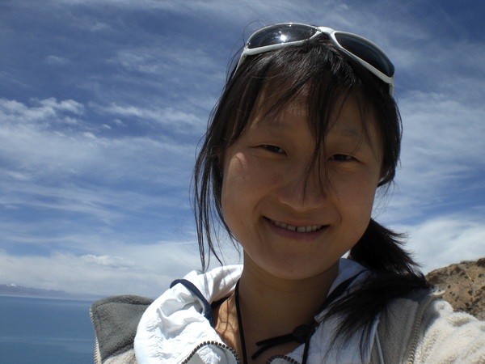
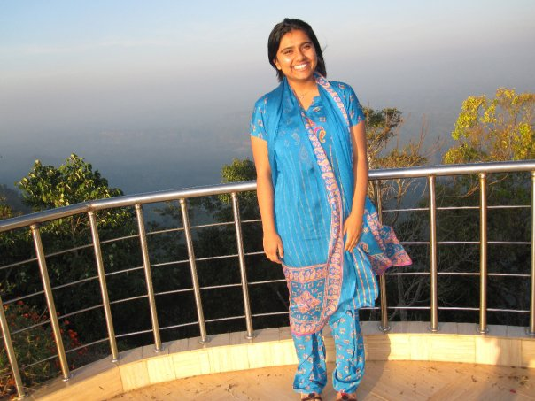
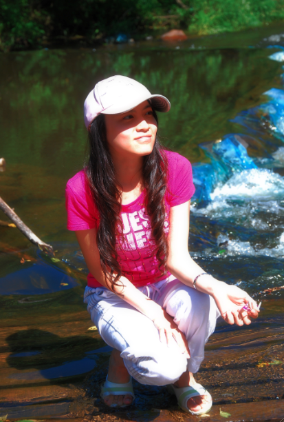
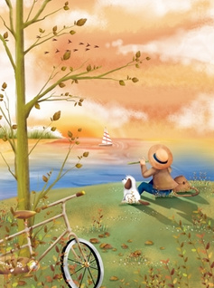
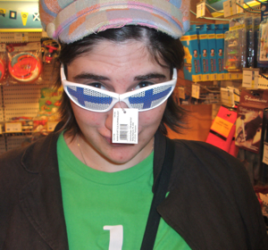

Angela Ruohan Wang
Co-Chair

Rittika Shamsuddin
Co-chair

Bei Li
Vice President

Mindan Chen
Treasurer
Cathy Tianjiao Zhang
Public Relations Chair

Courtney Schirf
Webmistress
Presenting our fabulous cast of techie officers…
Interested in almost anything she knows exists,
Angela became fascinated with
both computer science and the intricacy of human mind from spending countless hours
in robotics labs since she was 15 years old. She changed to a computer science
major from neuroscience because she couldn’t resist the creativity and possibilities
that CS allows, the ultimate happiness of problem solving,
and the power CS has in improving lives and in advancing other fields.
Favorite Foods: small steamed buns, duck soup hotpot, lychees,
mint chocolate ice cream, and anything sour related
Hobbies: reading, wondering, traveling, swimming, badminton, tennis, soccer
Rittika never thought
she would love Computer Science when she first came to college.
For her it all started after she took CS100 and CS101 at MHC.
Once she was hooked to the the different allurements of CS, she couldn’t get out.
She likes chocolate, thinks origami is beautiful, is fascinated by
fantasy and admires punctuality and diligence.
Growing up in a family where the bioengineering industry seemed
to be the right track, Bei had no idea
she would be so profoundly interested in Computer Science until
she took CS 101 at Mount Holyoke. She then became fascinated with everything
Computer Science entails and fully committed herself to this field of study.
Favorite Foods: Spicy Sichuan hotpot, sticky rice, chocolate ice cream
Favorite hobbies: computer games, iPhone games, writing up small programs just for fun
“I admire those who program to rock and shake the world and those who
help to build a better world with their computing skills. Programming
always provides me with gratification, or even a sense of achievement
at the end. I believe that computer science will teach me how to use
computers to make the world work as it does.”
Favorite foods: kiwi, berries, grapes, pitaya, pawpaw, sesame paste, nuts,
black rice congee with beans, seafood, sushi
Favorite hobbies: reading, traveling, math, physics, foreign languages, chess
and Chinese chess (still trying to learn go), dancing, music, movies, badminton, squash,
racquetball, etc…
Although she aspires to be a math teacher, Dora
has fond memories of programming in CS 101. She admires those who can delve deep into
programming, do it well, and then laugh cheerfully at the end of the day.
This applies to people of all sorts.
Favorite foods: Noodles, anything sweet and sour related
Favorite hobbies: Reading, writing, drawing
Contact Cathy.
A computer science major and math minor,
Courtney grew up on classic rock, Italian opera,
and science. She became fascinated with web design at the unlikely age of 12, and has since
developed a love for coding of all sorts.
Favorite hobbies: reading, linguistics, D&D, British comedies
Favorite foods: Swiss chocolate, Finnish milk
First programming language: Q Basic